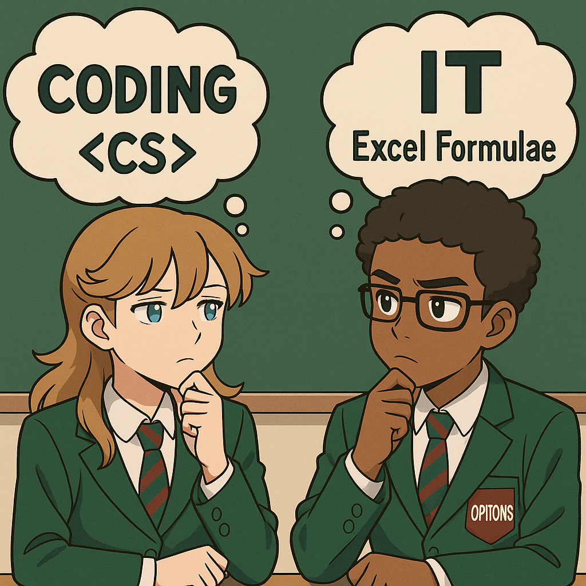

Lesson 4 – Images & Colour
Do Now

Let’s warm up with a quick review of what we already know!
False (1 byte = 8 bits)
A) Decimal
B) Hexadecimal
C) Binary
D) Roman Numberals C) Binary
128, 64, 32, 16, __, __, __, __ 128, 64, 32, 16, 8, 4, 2, 1
Knowledge Recap
🧠 Computer Science – Bitmap Images & Colours using Binary
A bitmap image is made of tiny coloured squares called pixels. Each pixel stores a binary code telling the computer what colour to show.
Each bitmap image may contain thousands or even millions of pixels. The computer displays these pixels in the correct positions to form a complete picture.
🎨 IT – Images and Colours in Slide Design
In IT, we use presentation tools to show ideas clearly. Good design makes slides easy to read and understand at a glance.
- Keep fonts large and consistent (24 pt+ for classroom display).
- Use high contrast between text and background colours.
- Include images or diagrams that support the message, not decorate it.
- Consider what size would be appropriate for an image, alongside the text.
Key Vocabulary
- Pixel
- A tiny square that makes up an image.
- Contrast
- Difference between colours; helps text be readable.
CS Activity – Bitmap Images & Colours using Binary
📘 Scroll down to the purple box and create a bitmap image using binary values:
Understanding Bitmap Pictures – 101Computing.net
You have 10 minutes to create your image and add it to your class notebook.
IT Activity – Make a PowerPoint from the Article
You have been given a PowerPoint presentation that has no colour or images.
- Add images that help the viewer to understand the content of each slide more. Do not add images just to decorate.
- Add colours to make the slides easy to read, and engaging.
Exit Ticket
- What is a pixel?
- Why do we add images to presentations?
- Name one way to make a slide easier to read.
Show All
This view expands all sections for printing/PDF. Use the toggles to show/hide sample tables.